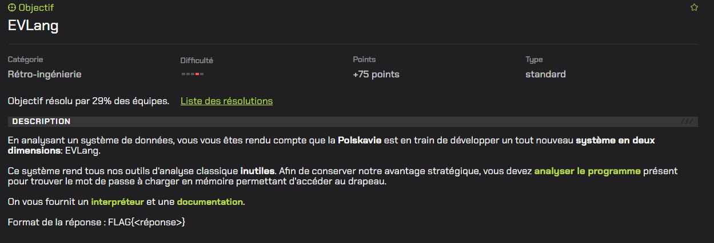
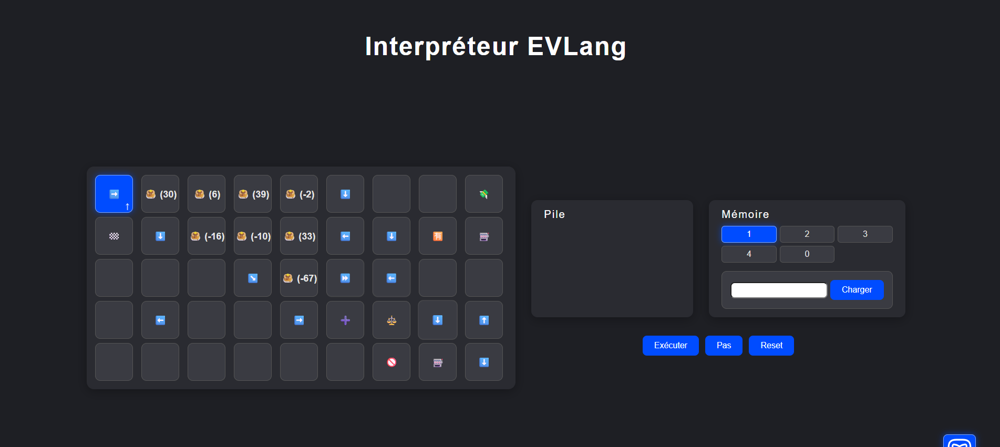
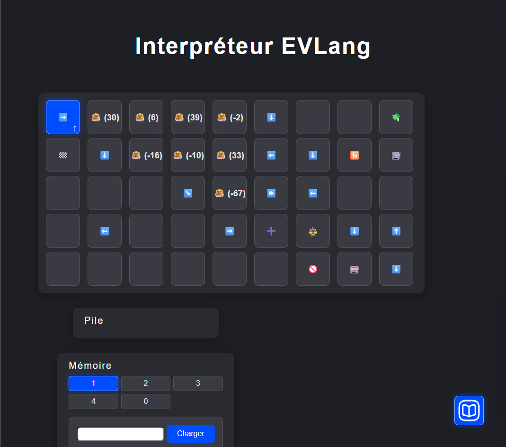

Problematique 1 - Challenge n°1(la recrue)
Enonce / Descriptif
On recrute quelqu’un avec un dossier parfait mais elle a cache un message dans son CV pour tester nos capacites.
Resolution
- Observation de la zone ou la photo etait censee etre.
- Detection d’un fond bleu uni suspect.
- Surlignage de la zone avec la souris.
- Decouverte d’un texte cache dans la meme couleur que le fond.
Commandes utilisees
Aucune commande utiliseeCaptures d'ecran commentees



Problematique 2 - Challenge n°2
Enonce / Descriptif
Comparer deux images satellites dont une contient des donnees supplementaires afin de trouver un message cache.
Resolution
- Verification des proprietes des images.
- Test de modifications visuelles (contraste, luminosite).
- Recherche d’un outil de comparaison de fichiers.
- Detection des differences binaires et identification du code cache.
Commandes utilisees
Aucune commande locale (utilisation d'un site web)Captures d'ecran commentees
Problematique 3 - Challenge n°3
Enonce / Descriptif
Exploiter une faille logique dans un systeme bancaire afin de generer des fonds pour continuer la mission.
Resolution
- Analyse du code via la console.
- Tests de transactions entre comptes.
- Observation d’un bug lors de transactions rapides et multiples.
- Exploitation du bug pour generer de l’argent.
Commandes utilisees
// Tests via console navigateur
// Simulation de transactions multiplesCaptures d'ecran commentees
Problematique 4 - Challenge n°4
Enonce / Descriptif
Analyser une cyberattaque sur des infrastructures numeriques et recuperer les codes necessaires a la restauration des donnees.
Resolution
- Analyse du code source.
- Compréhension du calcul des codes.
- Aide d’une IA pour comprendre l’algorithme.
- Execution d’une requete dans la console pour obtenir les codes.
Commandes utilisees
for (let i = 0; i < 1000; i++) {
let v;
try {
v = num3(i);
} catch (e) {
continue;
}
if (v === 31290) {
console.log("✅ num3 input =", i);
break;
}
}
const m = await import("./release.js");
console.log("num4(29) =", m.num4(29));Captures d'ecran commentees
Problematique 5 - Challenge n°5
Enonce / Descriptif
Un cable sous-marin reliant l’Europe aux iles de Starnopol a ete sectionne, ce qui perturbe les communications entre la Velmorasie et le continent. Les autorites soupconnent qu’un navire ait accidentellement ou volontairement coupe ce cable.
Pour mener l’enquete, nous disposons d’un fichier contenant des trames AIS au format NMEA, qui correspondent aux messages envoyes par les bateaux pour indiquer leur position et leur identite.
L’objectif est d’analyser ces donnees afin d’identifier le bateau present a proximite du point de rupture au moment de l’incident et de retrouver son identifiant MMSI.
Resolution
- Observation du fichier contenant les trames AIS.
- Compréhension que ces lignes correspondent aux messages envoyes par les bateaux.
- Utilisation d’un site permettant de decoder les trames NMEA.
- Recuperation des informations comme la position du bateau, son nom et son MMSI.
- Comparaison des coordonnees des bateaux avec la zone du cable coupe.
- Identification du bateau present au moment de l’incident.
Commandes utilisees
Aucune commande utilisee